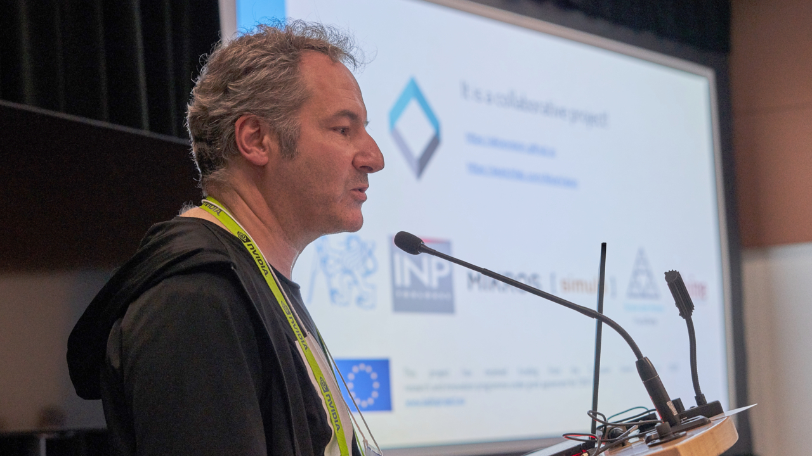
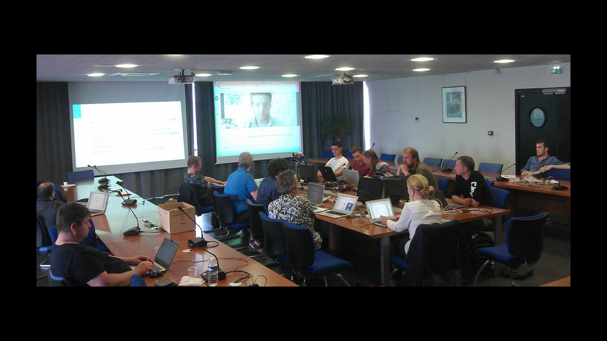
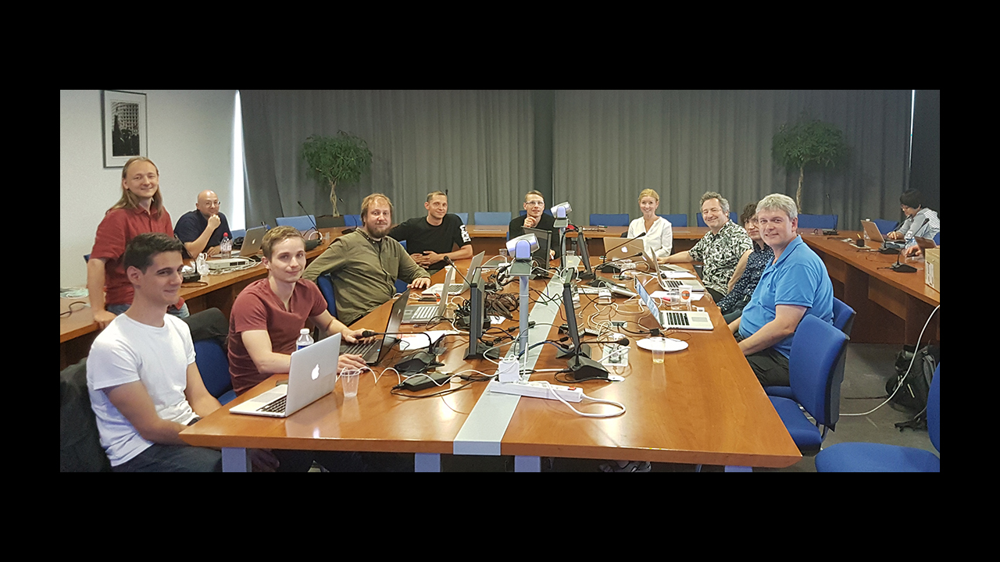
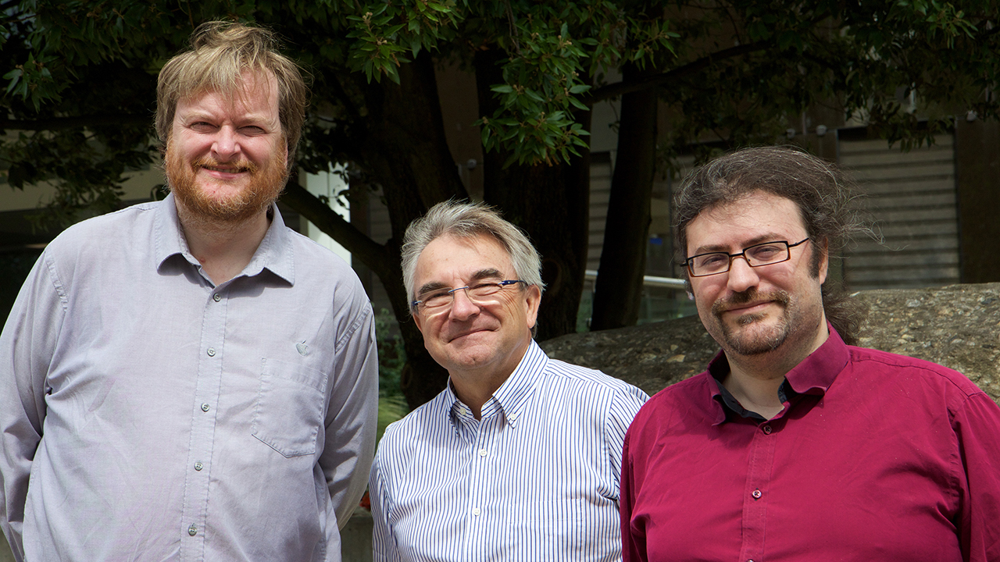
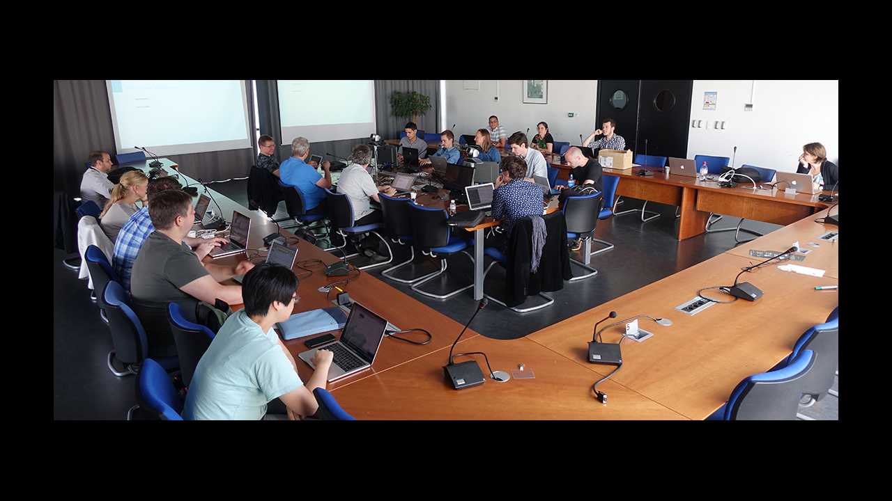
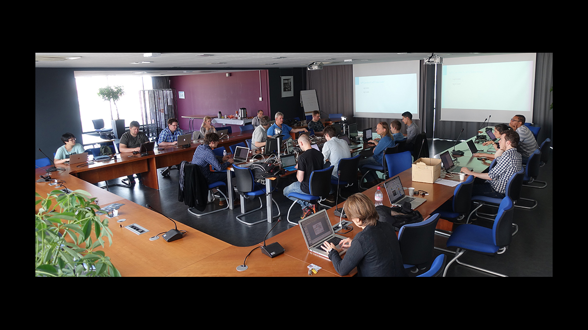

News
- 8th October 2018 - The Virtual Assist published an interview of the AliceVision team
- 13th August 2018 - AliceVision presentation at SIGGRAPH
- 9st August 2018 - First release of Meshroom binaries for Linux and Windows
- 1st June 2018 - Scanbox has published the first review of AliceVision framework
- 26th April 2018 - AliceVision conference at FMX
- 17th January 2018 - Intermediate Project Review
- 1st December 2017 - Quine joins the project consortium
- 28th June 2017 - Advisory Board in Toulouse with Project's Consortium and Ben HAGEN, Jon Michael PUNTERVOLD and Lars 'Lalo' NIELSEN
- 28-29th June 2017 - Plenary Meeting in Toulouse
- 28th June 2017 - Thomas Eskénazi (MIK) presented to EBU MDN workshop in Geneva the implementation of LADIO data model as an extension of EBU Class Conceptual Data Model (CCDM).
- 16th February 2017 - Tomas Pajdla (CTU) came at Mikros Image to see datasets and discuss about the evolution of the CMPMVS algorithms.
- 23rd to 27th January 2017 - One week workshop at Prague with Simula, Mikros Image and CTU to work on the analysis of CMPMVS and discuss about possible improvements in term of quality and performances.
- 15th and 16th December 2016 - LADIO Kickoff meeting in Prague

AliceVision conference at Siggraph 2018
August 2018 - Vancouver (Canada)
June 2018
AliceVision conference at FMX
April 2018 - Stuttgart (Germany)
AliceVision conference at FMX
April 2018 - Stuttgart (Germany)

Advisory Board
June 2017 - Toulouse (France)

Advisory Board
June 2017 - Toulouse (France)

EBU MDN workshop
June 2017 (Geneva)
with Tormod VÆRVÅGEN, Jean-Pierre EVAIN and Thomas ESKÉNAZI

Plenary Meeting
June 2017 - Toulouse (France)

Plenary Meeting
June 2017 - Toulouse (France)

Project Kick-off
December 2016 - Prague (Czech Republic)
Project Kick-off
December 2016 - Prague (Czech Republic)


{kind=link}